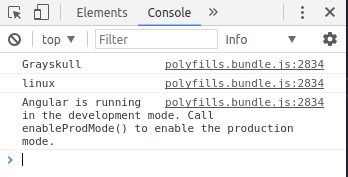

Mit Angular und Electron zur Desktop-Anwendung
angular electron desktop advanced | Michael Berrezak • | 17 Minuten
Warum solltest du dir Electron ansehen?
Die Entwickler vom Electron-Framework fangen ihre Produktbeschreibung mit folgendem Slogan an:
“if you can build a website, you can build a desktop app”.
Ich denke, dem ist nichts hinzuzufügen, außer dieser Anleitung, die Dir zeigt, wie Du eine Angular Webapp mit Electron in eine plattformunabhängige Desktop-Anwendung verwandelst.
Zum Erstellen und Verwalten der APP, werde ich die beliebte Angular-CLI benutzen. Wir haben dazu auch einen Artikel Einführung in Angular-CLI.
Voraussetzungen
Ich setze nicht voraus, dass Du die Angular-CLI installiert hast. Jedoch sollte NodeJS und NPM bereits in einer nicht zu alten Version(>=6.0) installiert sein. Der Installer für NodeJS kann hier heruntergeladen werden unter: http://nodejs.org/download/.
NPM ist die Paketverwaltung von Node.js und wird bei der Installation mitinstalliert.
Falls es Probleme einem Proxy gibt: https://docs.npmjs.com/misc/config#https-proxy
Zum Zeitpunkt dieses Artikels habe ich folgende Versionen installiert:
NodeJS v7.10.1
NPM 4.2.0
Vorbereitung
Um ein neues Angular Projekt zu erstellen, benötigst Du nicht zwingend die Angular-CLI. Ich würde aber stets empfehlen, sie zu benutzen. Das hat vielerlei Gründe, nicht zuletzt, dass bereits alles vorkonfiguriert ist. Selbst ein Testframework steht Dir zur Verfügung. Die Angular-CLI nimmt Dir einfach viel Arbeit ab und unterstützt dich während des gesamten Entwicklungsprozesses.
Um die Angular-CLI zu installieren öffne eine Konsole und gebe folgenden Befehl ein:
npm install -g @angular/cli
Die Angular-CLI wird global auf deinem System installiert. Navigiere in den Ordner, in dem Du deine App erstellen willst. Bei mir ist das ~/repo/private/. Da ich Linux benutze, werden bei Dir die Pfade wohl anders aussehen. Das ist aber kein Problem. Ich gebe meine Pfade immer an, damit Du logisch nachvollziehen kannst was ich gemacht habe.
Die neue App erstellst Du jetzt in deinem Ordner wie folgt:
~/repo/private$ ng new AngularElectron
Der Befehl ng new erstellt die App mitsamt der Abhängigkeiten und verdrahtet alles logisch miteinander.
Der Name der App ist jetzt AngularElectron. Du kannst aber ruhig einen anderen wählen.
Leider fehlt mir gerade die Fantasie für einen cooleren Namen.
In deinem Ordner ~/repo/private befindet sich nun ein neuer Ordner AngularElectron.
Öffne den Ordner und schaue einmal drüber.
Ich werde jetzt nicht auf die einzelnen Dateien eingehen, da das kein Angular Tutorial ist.
Dennoch solltest Du testen ob alles funktioniert.
Das kannst Du durch folgenden Befehl im neuen Ordner testen:
~/repo/private/AngularElectron$ ng serve
Der Output sollte dann in etwa so aussehen:

Schau Dir die App im Browser an, indem Du http://localhost:4200 öffnest. Dich sollte jetzt eine Seite mit dem Titel “Welcome to app!” und ein paar weitere Komponenten erwarten.
Das war der grobe Angular-Teil. Als nächstes zeige ich Dir, was getan werden muss um Electron zu integrieren.
Electron einrichten
Installiere das Electron-Framework bitte im Projektordner:
~/repo/private/AngularElectron$ npm install electron --save-dev
Es ist auch möglich Electron global zu installieren. Da globale Installationen aber oft mit Rechten verbunden sind, vermeide ich diese wo es nur geht
Die reine Installation von Electron bewirkt leider noch gar nichts.
Du musst noch ein paar Dateien und Ordner erstellen.
Also die eigentliche Konfiguration.
Fange mit dem electron-Ordner an:
~/repo/private/AngularElectron/src/electron
In diesem Ordner landet deine Electron Konfiguration.
Die erste Konfigurationsdatei die Du erstellst, nennst Du package.json und gibst ihr folgenden Inhalt:
{
"name": "angular-electron",
"version": "0.1.0",
"main": "main.js"
}
Diese Datei dient als Einstiegspunkt für das Electron-Framework.
Der wichtigste Eintrag hierbei ist der Link zur eigentlichen Electron-Konfiguration "main": "main.js".
Da diese main.js noch nicht existiert, musst Du sie ebenfalls erstellen und mit folgendem Inhalt füllen:
const electron = require('electron')
// Module to control application life.
const app = electron.app
// Module to create native browser window.
const BrowserWindow = electron.BrowserWindow
const path = require('path')
const url = require('url')
// Keep a global reference of the window object, if you don't, the window will
// be closed automatically when the JavaScript object is garbage collected.
let mainWindow
function createWindow () {
// Create the browser window.
mainWindow = new BrowserWindow({width: 800, height: 600})
// and load the index.html of the app.
mainWindow.loadURL(url.format({
pathname: path.join(__dirname, 'index.html'),
protocol: 'file:',
slashes: true
}))
// Open the DevTools.
// mainWindow.webContents.openDevTools()
// Emitted when the window is closed.
mainWindow.on('closed', function () {
// Dereference the window object, usually you would store windows
// in an array if your app supports multi windows, this is the time
// when you should delete the corresponding element.
mainWindow = null
})
}
// This method will be called when Electron has finished
// initialization and is ready to create browser windows.
// Some APIs can only be used after this event occurs.
app.on('ready', createWindow)
// Quit when all windows are closed.
app.on('window-all-closed', function () {
// On OS X it is common for applications and their menu bar
// to stay active until the user quits explicitly with Cmd + Q
if (process.platform !== 'darwin') {
app.quit()
}
})
app.on('activate', function () {
// On OS X it's common to re-create a window in the app when the
// dock icon is clicked and there are no other windows open.
if (mainWindow === null) {
createWindow()
}
})
// In this file you can include the rest of your app's specific main process
// code. You can also put them in separate files and require them here.
Diese Datei beschreibt, wie dein Fenster später aussehen soll und welche Datei(URL) geladen werden soll. Außerdem kannst Du dort eigene Funktionen definieren, auf die Du dann innerhalb deiner App-Logik zugreifen kannst. Für mehr Details solltest Du Dir die Electron Dokumentation anschauen.
Hier noch mal (als Übersicht) die neuen Dateien, die Du eben erstellt hast:
~/repo/private/AngularElectron/src/electron
~/repo/private/AngularElectron/src/electron/main.js
~/repo/private/AngularElectron/src/electron/package.json
Electron integrieren
Prinzipiell ist Electron jetzt schon lauffähig.
Dummerweise weiß dein Projekt aber noch nicht, dass es Electron gibt.
Dazu musst Du erst die entsprechenden Build-Scripts anlegen.
Öffne die Datei package.json, die sich im Hauptverzeichnis befindet (nicht die Neue!).
Zur Übersicht, hier der komplette Pfad: ~/repo/private/AngularElectron/package.json
Navigiere zu dem Tag scripts und füge folgendes hinzu:
"scripts": {
"ng": "ng",
"start": "ng serve",
"build": "ng build",
"test": "ng test",
"lint": "ng lint",
"e2e": "ng e2e",
"build-electron": "ng build --base-href . && cp src/electron/* dist/",
"electron": "npm run build-electron && ./node_modules/.bin/electron dist/"
},
Die beiden Einträge build-electron sowie nelectron sind neu.
Der Eintrag build-electron ruft den Angular-CLI Befehl ng-build --base-href . auf, welcher deine App baut und dann alles im Ordner dist/ ablegt.
Das Flag --base-href . setzt die Basis URL auf ., was soviel bedeutet wie “in diesem Verzeichnis”.
Da Electron auf Datei-Ebene und nicht auf Http-Ebene operiert, ist dies wichtig.
Würde Electron in einer Http-Umgebung laufen, wie eine Webseite, stünde dort “/”.
Genug geschwafelt, weiter mit der Erklärung.
Der Teil cp src/electron/* dist/ bewirkt, dass die Dateien die Du im src/electron Verzeichnis abgelegt hast nach dist/ , zu den anderen Build-Dateien, kopiert werden.
Zusätzlich hast Du den Befehl electron hinzugefügt.
Hier wird als erstes der vorher beschriebene Befehl build-electron ausgeführt.
Anschließend wird Electron aufgerufen (Hast Du installiert), und als Parameter der Build-Ordner dist/ übergeben.
Speichere die Änderungen ab.
Vorsicht: Die Pfade der oben beschriebenen Befehle funktionieren so nicht in einer Windows Umgebung. In so einem Falle müssen alle “/” mit “\\” ersetzt werden. Außerdem muss auch der Befehl “cp” mit “copy /Y” ersetzt werden.
Electron wird deine App jetzt leider noch nicht anzeigen/laden.
Es fehlen noch ein paar Einstellungen an der Applikation.
Öffne die Datei ~/repo/private/AngularElectron/src/index.html und ändere sie so ab:
<base href="./">
Aus "/" wird also "./" weil Electron wie schon erwähnt auf Dateiebene operiert.
Als nächstes bitte noch ~/repo/private/AngularElectron/src/polyfill.js editieren.
Ändere folgenden Import ab:
import 'zone.js/dist/zone';
nach:
import 'zone.js/dist/zone-mix';
Angular nutzt ZoneJS, Electron kommt damit aber nicht zurecht. Daher haben sich die ZoneJS Entwickler etwas einfallen lassen und eine neue dist zur Verfügung gestellt: zone-mix.
Das sind erst mal alle Einstellungen die Du benötigst, um deine App starten zu können. Teste es doch einfach mal mit:
~/repo/private/AngularElectron$ npm run electron
Es sollte ein waschechtes OS Fenster aufgehen, mit dem Inhalt deiner Angular App.

Weitere Funktionen
Du bist jetzt an einer Stelle angekommen, an der Du eventuell nicht mehr weiter machen musst, da Dir der aktuelle Fortschritt schon langt. Das trifft genau dann zu, wenn Du nicht vorhast mit dem Betriebssystem zu kommunizieren (z.B. Dateien lesen/schreiben), oder mit dem Electron-Framework zu kommunizieren. Im Moment kannst Du aus deiner Angular2 Logik nicht auf Electron zugreifen. Außerdem denkt deine App nach wie vor, dass sie sich in der Umgebung des Browsers befindet, anstatt in der Umgebung deines Betriebssystems. Deswegen musst Du den Zugriff auf Electron in deine App biegen.
Der folgende Weg ist ein Workaround und eher unsauber!
Thorsten Hans hat ein Projekt entwickelt, um angenehm auf Electron zuzugreifen. Das Ganze mit TypeScript, wodurch man alle Vorteile von TS behält. Ich hatte leider noch keine Zeit es zu testen, aber es wäre mal einen Versuch wert.
Öffne die Datei ~/repo/private/AngularElectron/src/index.html und füge ihr folgendes Script hinzu:
<head>
<meta charset="utf-8">
<title>BioApp</title>
<base href="./">
<meta name="viewport" content="width=device-width, initial-scale=1">
<link rel="icon" type="image/x-icon" href="favicon.ico">
<script>
var electron = require('electron');
</script>
</head>
Du benutzt an dieser Stelle die require() Methode, welche von NodeJS zur Verfügung gestellt wird, um Module zu laden.
Diesen Trick benötigst Du, da Electron CommonJS nutzt um Module aufzulösen, dein Code wird aber schon mit Webpack kompiliert.
JavaScript kennt jetzt zwar die Variable electron, das bringt Dir aber nichts, da Du ja TypeScript benutzt.
Deshalb öffne doch mal die Datei ~/repo/private/AngularElectron/src/typings.d.ts und mache mit folgenden Einstellungen TypeScript mit Electron bekannt:
/* SystemJS module definition */
declare var module: NodeModule;
declare var electron: any;
interface NodeModule {
id: string;
}
Du kannst jetzt global auf die Variable electron zugreifen.
Teste das doch einfach mal, indem Du den Titel in ~/repo/private/AngularElectron/src/app/app.component.ts änderst:
import { Component } from '@angular/core';
@Component({
selector: 'app-root',
templateUrl: './app.component.html',
styleUrls: ['./app.component.css']
})
export class AppComponent {
title: String;
constructor() {
var app = electron.remote.app;
this.title = app.getAppPath();
}
}
Das war’s auch schon, Du greifst jetzt direkt über die global definierte electron Variable auf das Electron-Framework zu.
Starte die App, um deine Änderungen zu testen.
~/repo/private/AngularElectron$ npm run electron
Solltest Du jetzt anstelle von app den Pfad zu deiner App sehen.

Du kannst jetzt auch eigene Funktionen innerhalb der Electron-Umgebung definieren.
Das solltest Du auch gleich mal ausprobieren! Öffne die Datei ~/repo/private/AngularElectron/src/electron/main.js und füge ihr am Ende eine neue Methode hinzu:
app.beiDerMachtVon = function () {
return "Grayskull";
}
Rufe diese Methode in der Komponente ~/repo/private/AngularElectron/src/app.component.ts auf:
constructor(){
var app = electron.remote.app;
this.title = app.getAppPath();
console.log(app.beiDerMachtVon());
}
Ob das geklappt hat, siehst Du in der Konsole deiner App, die Du mit <STRG>+<SHIFT>+I öffnen kannst, nachdem Du die App erneut gebaut hast natürlich.
~/repo/private/AngularElectron$ npm run electron

Im Laufe der Zeit wirst Du mit Sicherheit auch mal innerhalb deiner Angular2 Logik auf Node.js zugreifen wollen!
Zum Beispiel, wenn Du neue Module laden willst (require()).
Hierfür musst Du (ebenfalls wie bei Electron) TypeScript mitteilen, dass es dort ein Framework mit diversen neuen Methoden gibt.
Das Schöne ist, dass Du an dieser Stelle sauber arbeiten kannst, weil es eine TypeScript Erweiterung für die Node.js Methoden gibt.
Außerdem wird die Visual Studio Code Intelli-Sense um die neuen TypeScript Befehle erweitert.
Installiere die node types, indem Du eine Konsole im Hauptverzeichnis deiner App öffnest und diesen Befehl eingibst:
~/repo/private/AngularElectron/$ npm install --save @types/node
Füge die neuen Types zu deinen TypeScript-Kompiler-Optionen hinzu, indem Du die Datei ~/repo/private/AngularElectron/src/tsconfig.app.json erweiterst:
"compilerOptions": {
"outDir": "../out-tsc/app",
"module": "es2015",
"baseUrl": "",
"types": [
"node"
]
},
Teste die neuen Erweiterungen und baue folgenden Befehl in deine ~/repo/private/AngularElectron/src/app.component.ts ein:
constructor(){
var app = electron.remote.app;
this.title = app.getAppPath();
console.log(app.beiDerMachtVon());
var platform = require('os').platform();
console.log(platform);
}
Zusätzlich zu “Grayskull” solltest Du jetzt auch noch die Ausgabe “Browser” in der Konsole sehen.

Schön, dass dort jetzt Browser steht, leider ist das aber nicht dein Betriebssystem. Das solltest Du noch ändern, da Du diese Abfragen eventuell mal benötigst. Das Problem hierbei ist, dass Webpack falsche Render-Einstellungen zum Rendern benutzt. Im nächsten Schritt wirst Du sehen, wie dieses Problem zu beheben ist.
Webpack konfiguration
Angular-CLI nutzt als Standard Builder nicht SystemJS sondern Webpack. Wenn Du mehr über Webpack erfahren willst, dann lese Dir einfach die Doku durch. Hier eine kleine Zusammenfassung auf Englisch:
Webpack is a module bundler for modern JavaScript applications.It is incredibly configurable, but to get started you only need to understand Four Core Concepts: entry, output, loaders, and plugins.
Um den renderer zu ändern, musst Du die Webpack Konfiguration bearbeiten.
Das dumme ist nur, dass die AngularCLI diese Konfigurationsdatei beim Erstellen des Projektes ausblendet.
Es gibt also keine webpack.config Datei in deiner Projektstruktur.
Die Angular-CLI Entwickler haben sich gegen eine Webpack Konfiguration ausgesprochen, weil sie der Meinung sind, dass es nicht in ihr Konzept passt. Mehr zu dem Thema kannst Du hier lesen.
Es gibt dennoch eine Methode die Einstellungen von Webpack zu editieren.
Dazu musst Du die App aber “aufbohren”.
Es gibt einen Befehl, der die Konfigurationsdatei aus dem Projekt “heraus saugt”.
Leider kann man diese dann nicht mehr verstecken und hat sie für immer in seiner Projektstruktur.
Das hat außerdem zur Folge, dass deine Start-Skripte nicht mehr funktionieren.
ng serve zum Beispiel.
Das kannst Du aber leicht beheben.
Vorsicht: Diesen Schritt kann man nicht rückgängig machen!
Öffne eine Konsole im Hauptverzeichnis und gebe ein:
~/repo/private/AngularElectron/$ ng eject

AngularCLI empfiehlt nach diesem Schritt npm install aufzurufen, das machst Du jetzt auch gleich mal.
Dir ist bestimm aufgefallen, dass es jetzt im Hauptverzeichnis deiner App geine neue Datei gibt: webpack.config.js
Öffne sie und füge die benötige Einstellung hinzu, um Webpack mitzuteilen, dass wir den Electron-Renderer benutzen möchten:
module.exports = {
"target": 'electron-renderer',
"resolve": {
Damit Du die App fehlerfrei bauen kannst, musst Du jetzt noch deine package.json im Hauptverzeichnis anpassen.
Im Skript build electron muss das ng serve durch npm run build ersetzt werden, das sieht dann so aus:
"build-electron": "npm run build && cp src/electron/* dist/",
Starte die App und schaue Dir die Ausgabe auf der Konsole an, dort sollte jetzt dein OS stehen, bei mir ist das linux.

Deine App ist jetzt von Electron umgeben und Du kannst auf das Betriebssystem zugreifen, wie in einer richtigen Desktop Applikation. Ich hoffe Dir hat die Anleitung Spaß gemacht und vor allem, dass sie Dir etwas gebracht hat.
Viel Erfolg mit Angular und Electron.


Michael Berrezak